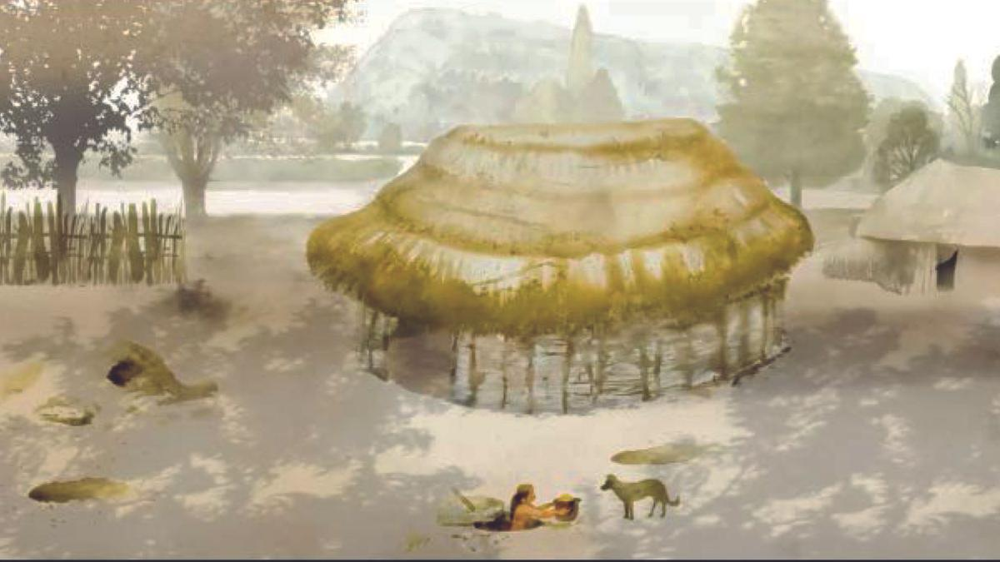
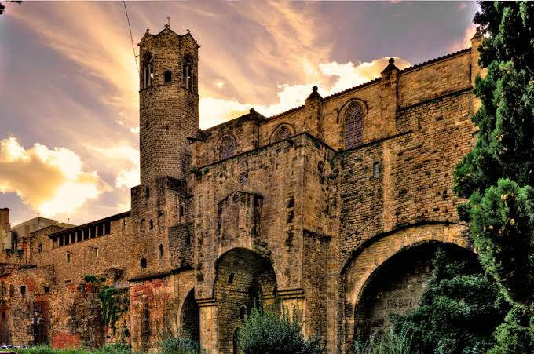

La historia de Barcelona se remonta a más de 2.000 años. Aunque existen indicios de asentamientos anteriores, la ciudad comenzó a desarrollarse durante la época romana.

Los primeros habitantes
Los primeros habitantes de Barcelona fueron los ibéricos,
seguidos por los romanos.

La época romana
Durante la época romana, Barcelona se convirtió en un importante
centro comercial y militar, con una muralla que protegía la ciudad.
La Barcelona medieval
Durante la época medieval, Barcelona se desarrolló como un importante
centro económico y cultural, con el crecimiento de su población y
la construcción de importantes edificios religiosos y civiles.
La Barcelona moderna
En la época moderna, Barcelona experimentó un gran crecimiento
industrial y urbanístico, con la construcción de nuevos barrios
y la modernización de su infraestructura.
Evolución histórica
La evolución de Barcelona a lo largo de los siglos refleja su importancia como centro cultural, económico y político en la Península Ibérica.
Acontecimientos importantes
Barcelona ha vivido numerosos acontecimientos que han marcado su historia, desde la fundación de la ciudad hasta los eventos más recientes.
Patrimonio histórico
Barcelona cuenta con un rico patrimonio histórico que incluye edificios, monumentos y lugares de interés cultural.